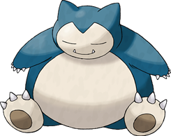
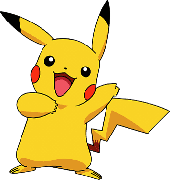
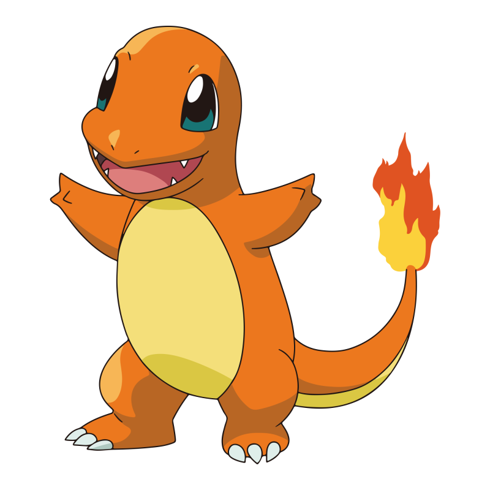
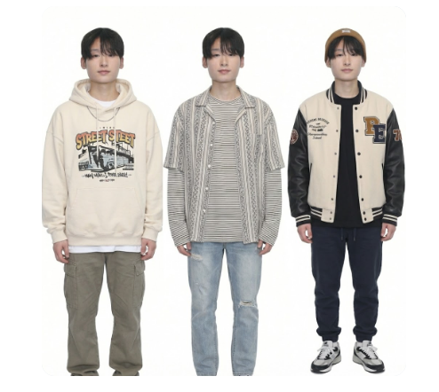

⚖️
판사 잠만보

변호사 피카츄

검사 파이리

🔴 조롱파 대법원 공식 인증 🔴
최 종 판 결 문
사건번호: 2026-JO-RONG-NEWJOB
피고인: 연경 (조롱파 수석 앞잡이)
원고: 조롱파 일동
주문: 피고인의 독보적인 조롱 실력과 센스를 인정하여, 새로운 곳으로의 이직을 강력히 승인함.
피고인: 연경 (조롱파 수석 앞잡이)
원고: 조롱파 일동
주문: 피고인의 독보적인 조롱 실력과 센스를 인정하여, 새로운 곳으로의 이직을 강력히 승인함.

[조롱파의 영원한 앞잡이 '연경님']
⚖️ 조롱파 추억 아카이브

증 제1호증
AI 조롱 아티스트
👆 클릭하여 열람

증 제2호증
두쫀쿠 조롱죄
👆 클릭하여 열람

증 제3호증
틈새 조롱 포착죄
👆 클릭하여 열람

증 제4호증
홈플러스 패션 논란
👆 클릭하여 열람
"이직 축하드립니다! 조롱파의 이름으로 응원합니다!"
새로운 곳에서도 그 예리한 시선과 밝은 에너지로
모두를 사로잡으며 '무기징역급 행복'을 누릴 것을 판결한다!
2026. 04. 14.
조롱파 일동 (인)
📸 조롱파 완전체 인증샷 📸
(사진을 클릭해 보세요!)

석현님